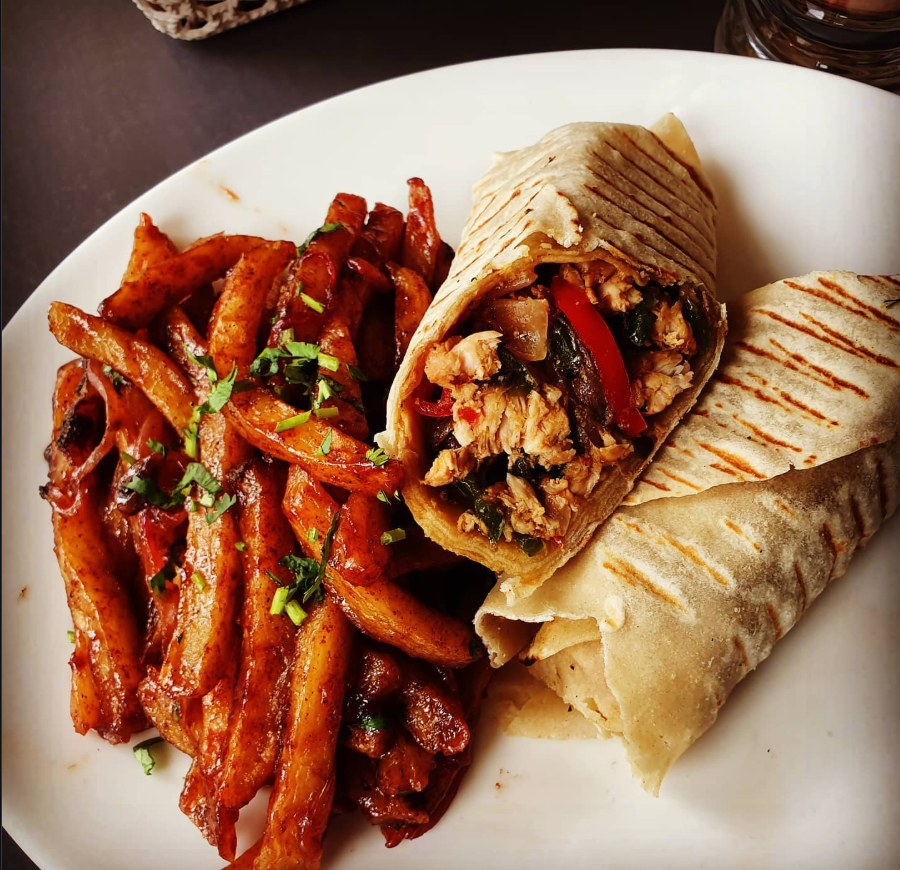

About MK
MK was founded in. This shop wa built from a love of Shawarma🌯🌯. Waba laba dub dub

MK was founded in. This shop wa built from a love of Shawarma🌯🌯. Waba laba dub dub
| Shawarma🌯🌯 | Qty | Price |
|---|---|---|
| Chicken | 1 | Ksh 250 |
| 2 | Ksh 450 | |
| 3 | Ksh 600 | |
| Beef | 1 | Ksh 350 |
| 2 | Ksh 600 | |
| 3 | Ksh 950 | |
| chips &Salsa Ksh 200 | ||